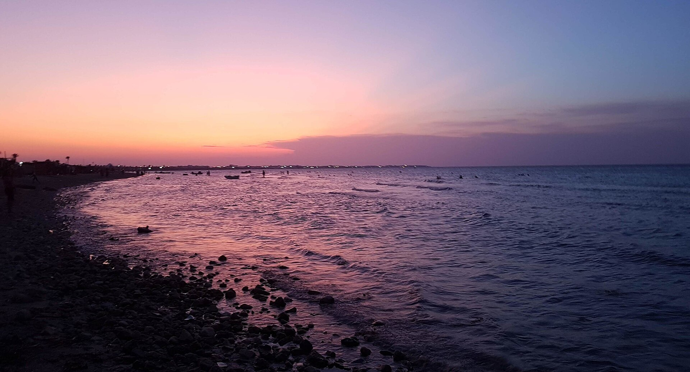
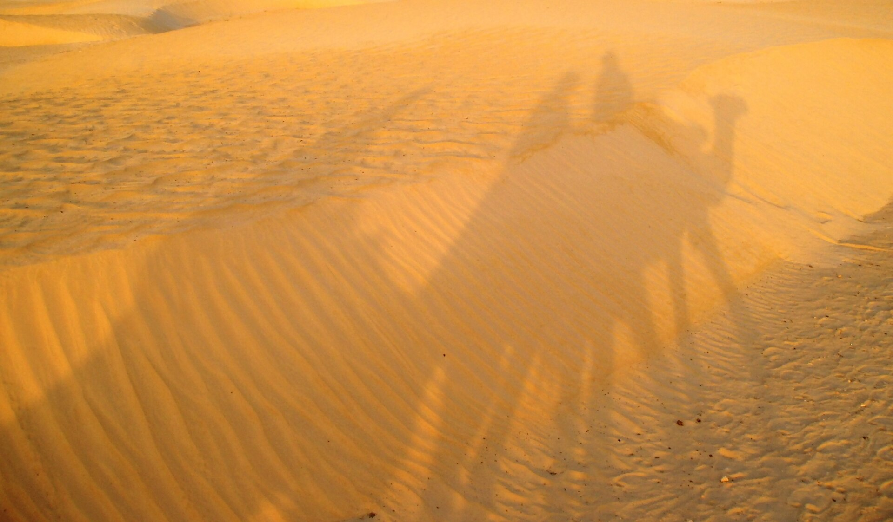

La Tunisie possède de nombreuses destinations touristiques adaptées à différents types de voyageurs.

Djerba est une île touristique située au sud-est de la Tunisie. Elle est connue pour ses belles plages, son climat agréable, ses paysages, son patrimoine culturel et ses villages traditionnels. C’est une destination très appréciée pour les vacances et la détente.

Le Sahara tunisien est une vaste région désertique située principalement dans le sud de la Tunisie. Il se caractérise par ses grandes dunes de sable, ses paysages désertiques et ses oasis. Parmi les principaux endroits du Sahara tunisien, on trouve **Douz, Tozeur, Nefta, Ksar Ghilane, Tataouine et Matmata**. Ces régions sont connues pour leurs paysages naturels, leurs oasis, leurs villages traditionnels et leurs activités touristiques comme les excursions à dos de dromadaire et les promenades en 4x4.
| Destination | Type | Activité principale | Prix moyen |
|---|---|---|---|
| Djerba | Plage | Natation | 150 DT |
| Tozeur | Désert | Excursion | 200 DT |
| Hammamet | Plage | Sports nautiques | 180 DT |
| Programme de voyage | ||
|---|---|---|
| Jour | Matin | Après-midi |
| Jour 1 | Visite de la ville | Plage |
| Dîner traditionnel tunisien | ||